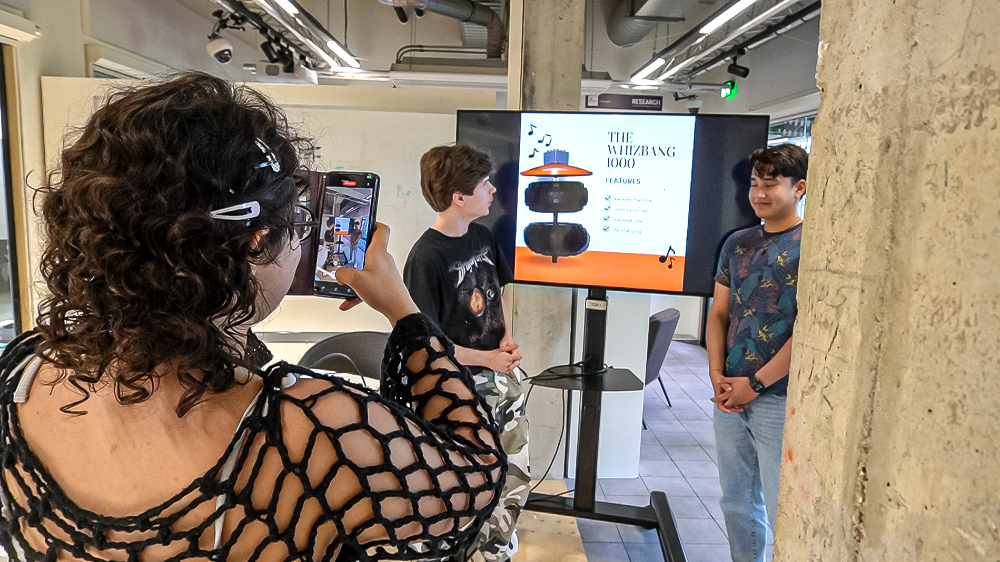
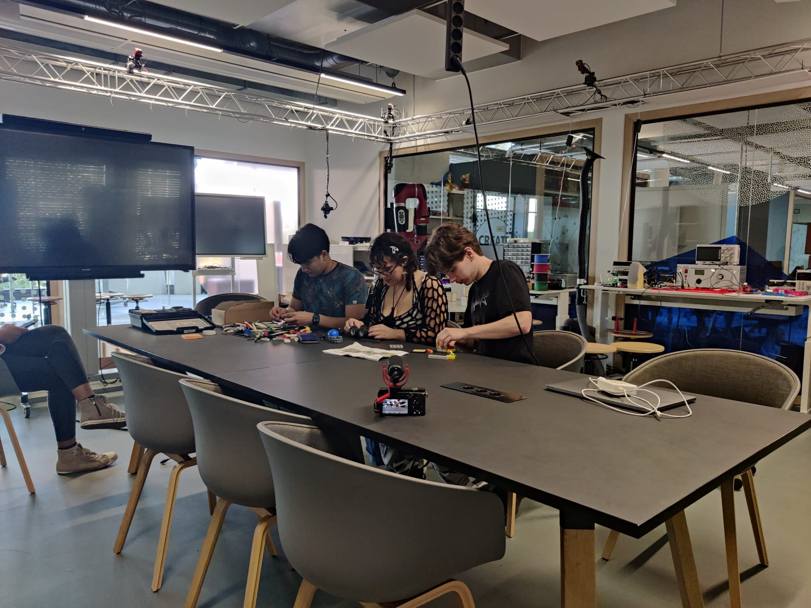
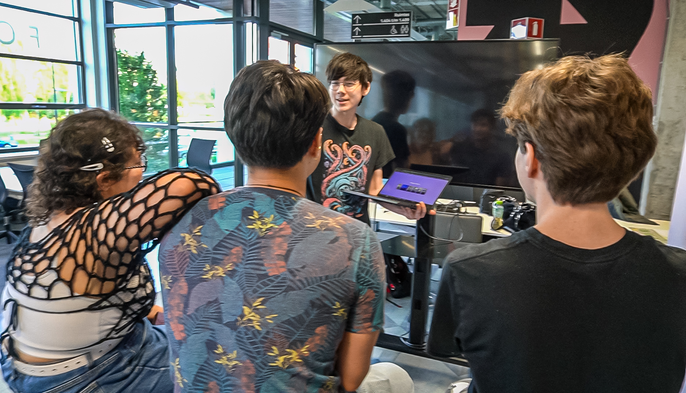
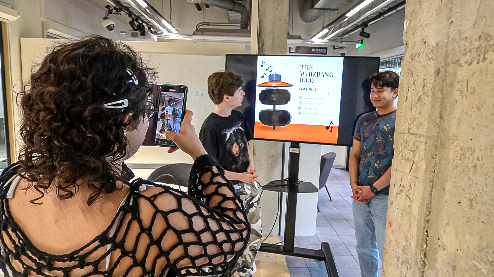
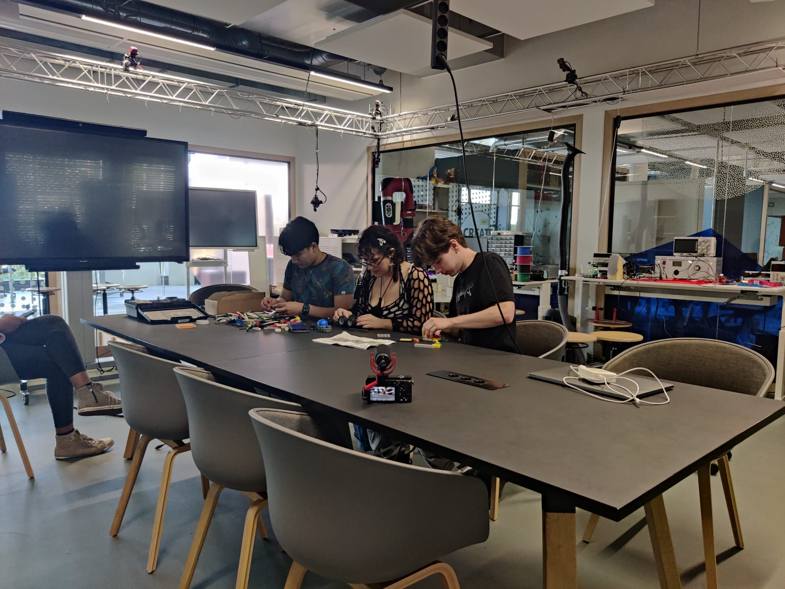
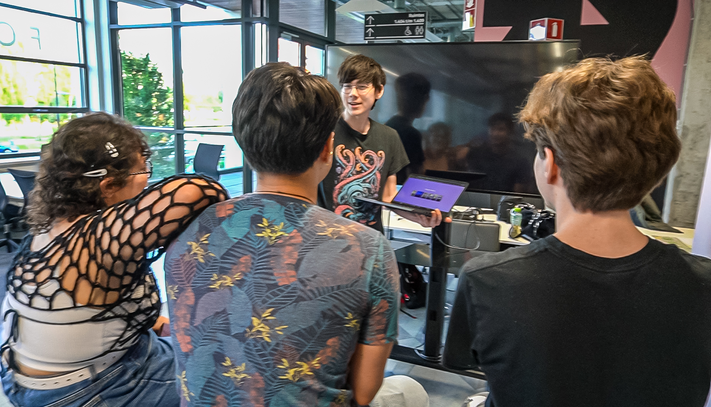

Advies - Hoe wordt de onboarding game ingezet?
Onderzoeksvragen
- Hoe maak je een onboarding game voor Strijp TQ dat een PLOU kan gebruiken om hun nieuwe studenten bekend en vertrouwd te maken met het gebouw?
- Wat is de huidige status van de onboarding applicatie en hoe moet dit verbeterd worden?
Context
In de vorige fase is de hoofdvraag van dit project beantwoord, en in deze fase worden de gerealiseerde producten aan de stakeholders overgedragen. Hoewel het adviesdocument nog niet volledig compleet zal zijn in dit portfolio, kan er wel worden beschreven wat er allemaal in komt te staan. Hiermee wordt de Triple Diamond compleet afgesloten en het gehele project afgerond. Aan het eind van deze fase hebben de PLOU’s (semester coördinaten) een instructie van hoe de onboarding event wordt klaargezet en gebruikt. Daarnaast ontvangen de stakeholders van Building Attention een overdraagbaarheidsdocument met daarin wat er nog gedaan moet worden binnen dit project met daarbij professioneel advies.
Methodes
Tijdens deze fase worden er drie methodes gebruikt om onderzoeksvragen te beantwoorden. Deze onderzoeksmethodes zijn gebaseerd op de CMD methods. Soms staan er meerdere methodes samen als één kopje, dit is gedaan omdat dat onderzoeksproces hetzelfde document en resultaat delen.
Interview PLOU’s - Peer Review
De PLOU’s werden geïnterviewd die uiteindelijk de onboarding game gaan inzetten. Aan hen werd gevraagd in welke vorm ze het overdrachtsdocument zien. Hierdoor wordt het voor de PLOU aantrekkelijk gemaakt om de game makkelijk in te zetten.
Field Trial
Er is aan Night of the Nerd bezoekers gevraagd om keywoorden te selecteren wat ze van de UI vinden van de onboardingapplicatie. Straks bij het adviesdocument kan de huidige staat van de UI worden meegegeven.
Quality Review
Er wordt nog kritisch gekeken naar de onboardingapplicatie. Hierdoor kan bepaald worden wat er nog niet ideaal werkt en wat veranderd moet worden na de portfolio deadline. Dit kan worden verwerkt in het adviesdocument.
Resultaten
Resultaat interview PLOU’s - Peer Review
Ze wilde graag een sales video (uitleg over waarom een PLOU het zou moeten gebruiken en hoe makkelijk is om te gebruiken), korte instructies en makkelijk opzetbaar iets bij de ISSD.
Resultaat Field Trial
Over het algemeen waren de geselecteerde woorden positief over de UI. De enige feedback punten wat mensen hadden was dat er te veel tekst was en dat paars niet echt een mooie kleur vonden.
In de afbeelding hierboven is te zien dat het grootste gedeelte van de gevraagde mensen de UI overzichtelijk vinden. Echter zijn er nog wel veel negatieve woorden met de UI geassocieerd wat niet ideaal is. De resultaten hiervan worden meegegeven aan het adviesdocument.
Resultaat Quality Review
De code is kritisch bekeken door mijzelf en door een professionele software programmeur buiten Fontys. De applicatie is zo gemaakt dat er nog makkelijk functies eraan toegevoegd kunnen worden.
Conclusie
Hoe maak je een onboarding game voor Strijp TQ dat een PLOU kan gebruiken om hun nieuwe studenten bekend en vertrouwd te maken met het gebouw? Door een korte overdraagbaarheidsdocument te maken met de instructies hoe je de game moet voorbereiden. De game moet makkelijk op te stellen zijn in een pakket en nog voor de gemakkelijkheid een instructievideo. De huidige status van de onboarding applicatie is functioneel, de game werkt ermee. Echter is de UI nog niet optimaal en zijn er nog wat functies die beter geprogrammeerd kunnen worden. De grootste pijnpunt bij de UI test en nog bij de onboarding studenten test is dat de tekst zou moeten worden vervangen met video’s. Veel mensen hebben moeite met lezen en een video zal dit probleem hoogstwaarschijnlijk weghalen.Dit zal dan nog worden geïmplementeerd na de portfolio deadline. Deze pijnpunten van de applicatie zijn meegenomen in het adviesdocument, met daarbij hoe dit verbeterd kan worden. De onboarding game lost het navigatie probleem op. Alle kleinere problemen wat buiten de scope van dit doel bevat is nog beschreven in het adviesdocument.
 





Tot Slot
Dit project is nu succesvol afgerond. Na het afronden van het portfolio zullen er nog enkele kleine verbeteringen van de applicatie worden toegevoegd en zal er een adviesdocument worden overgedragen aan de stakeholders. Ik ben trots op het resultaat van dit half jaar hard werken, dat heeft geresulteerd in een geweldig product. Alle projectonderdelen zijn volgens de wensen van de stakeholders opgeleverd in de GIT-omgeving, zoals gevraagd door de stakeholders van 'Building Attention'.
Bewijs
Bronnen
- CMD Methods. (n.d.-a). https://cmdmethods.nl/cards/lab/field-trial
- CMD Methods. (n.d.-a). https://cmdmethods.nl/cards/field/interview
- CMD Methods. (n.d.-a). https://cmdmethods.nl/cards/showroom/peer-review
- CMD Methods. (n.d.-a). https://cmdmethods.nl/cards/showroom/quality-review